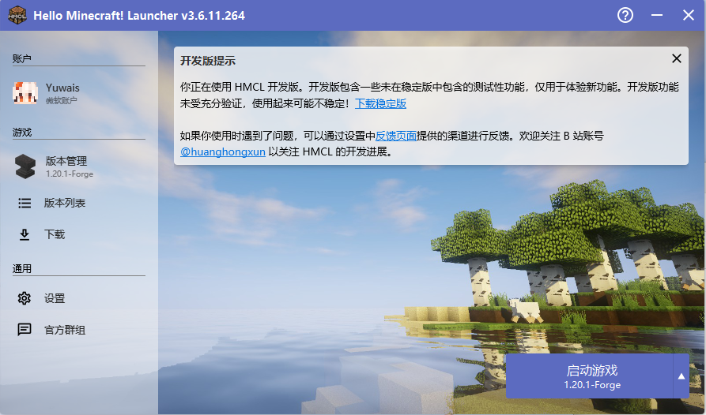
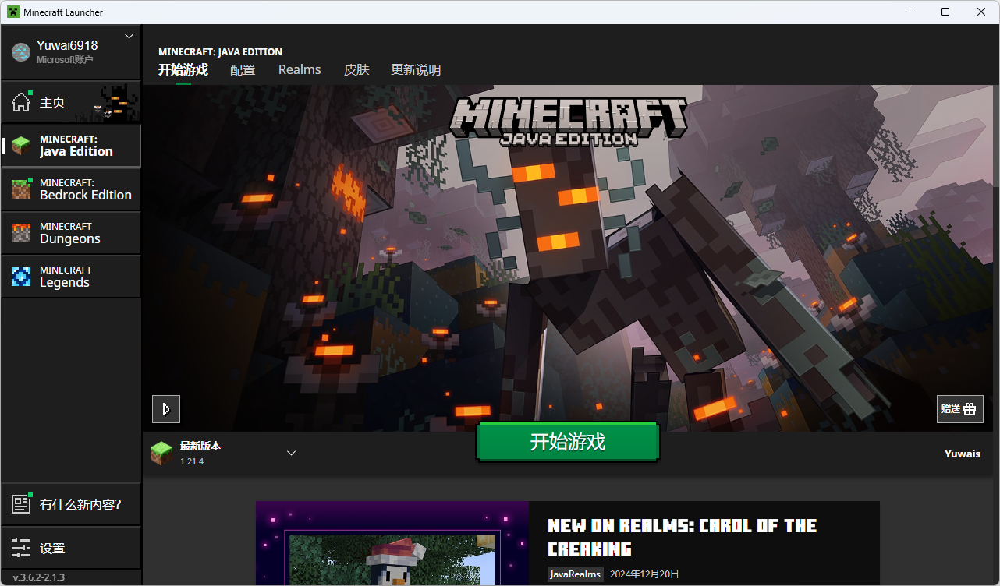

下载Minecraft并启动（网站施工中，反正没人看）
以下均为Windows版本启动器
下载模组（整合包）
下载光影
联机
其他
以下均为Windows版本启动器
下载模组（整合包）
下载光影
联机
其他

特点：
1.用的是国内源且下载源多，pcl下不了的hmcl可以下
2.可以直接导出整合包
3.有Mac与Linux版本
4.不知道了

特点：
1.有用国内源，但hmcl的更稳定
2.百宝箱中可以进行内存优化、清理垃圾，特别是那个千万别点
3.自带多线程下载器
4.帮助界面很有帮助，教程很详细
5.不知道了

特点：
1.可以启动基岩版、地下城等非Java版本
2.不知道了
缺点：
安装模组、整合包等东西不方便，且使用的不是国内源
不建议作为Java版启动器使用

特点：
1.相比PCL2和hmcl看起来更正规一些（不知道正规来形容恰不恰当）
2.功能更丰富，但不一定用得上
3.可以导出整合包，个人认为比hmcl的导出功能好一些
4.个人认为启动Servers版更加方便，但不一定用得上
缺点：
使用的不是国内源而是国外源，安装版本时可能较慢或失败
需要手动汉化
特点：
可以制作模组，调式方便
缺点：
其他都是缺点
你还真想用这个？
联系方式：yzwou@foxmail.com
本网站仅供学习和交流使用